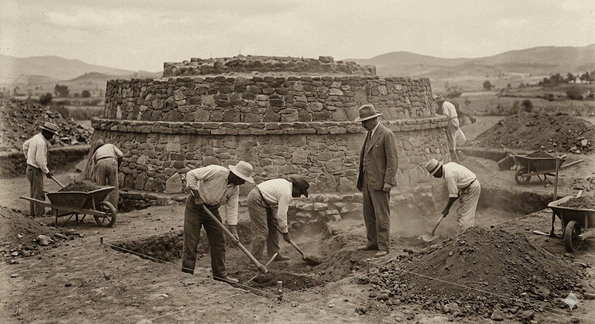

Proyecto de Intervención Pedagógica - Escuela Normal Superior

Aquí puedes redactar cómo fue descubierta la zona, el papel del arqueólogo José García Payón en los años 30, y la importancia estratégica del sitio en el Valle de Toluca durante la dominación mexica.
🎧 Audio-Guía: El Descubrimiento
Presiona "Play" para escuchar la narración pedagógica.
Este recorrido de 360 grados nace como una respuesta a la necesidad de crear herramientas didácticas modernas para la educación. Al llevar el museo al entorno digital, superamos las barreras geográficas y fomentamos una preservación interactiva del patrimonio matlatzinca...